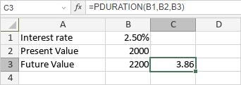

PDURATION funkcija
PDURATION funkcija je jedna od finansijskih funkcija. Koristi se za izračunavanje broja perioda koji su potrebni da investicija dostigne određenu vrednost.
Sintaksa
PDURATION(rate, pv, fv)
PDURATION funkcija ima sledeće argumente:
| Argument | Opis |
|---|---|
| rate | Kamatna stopa po periodu. |
| pv | Sadašnja vrednost investicije. |
| fv | Željena buduća vrednost investicije. |
Napomene
Svi argumenti moraju biti pozitivni brojevi.
Kako primeniti PDURATION funkciju.
Primeri
Slika ispod prikazuje rezultat koji vraća PDURATION funkcija.
